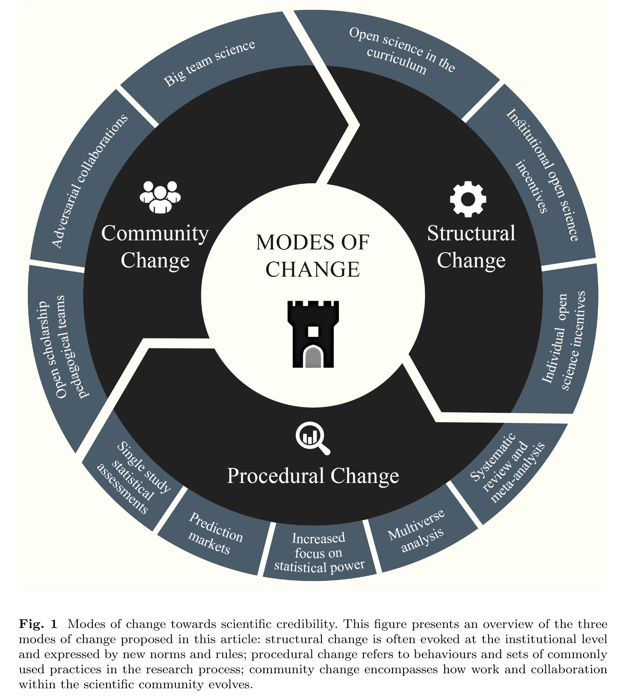
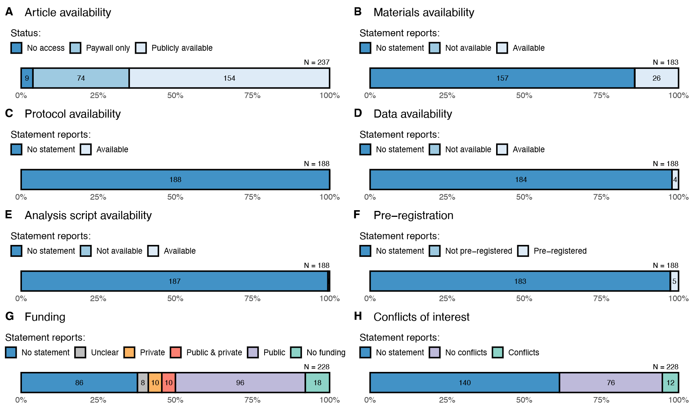

Pédagogiques
Il s’agit ici de présenter, en tant qu’enseignant-chercheur, quelles sont mes perspectives d’enseignements. Il s’agit, par delà les indicateurs, de proposer un éclairage narratif plus particulièrement focalisé sur les enseignements de Master et de Doctorat en psychologie.
Une partie de l’évaluation de mes enseignements et notamment la partie qualitative a permis de dégager différents axes pédagogique1. Il s’agit ici de présenter plus précisément les principes organisateurs que je cherche à promouvoir et dont je tente d’imprégner mes enseignements au niveau du Master et du Doctorat de Psychologie.
Transmettre la science ouverte
Cet éclairage est le résultat d’une sollicitation pour évoquer la place de la science ouverte2 en psychologie clinique, ce qui m’a permis de formaliser par écrit une partie de ce qui était sous-jacent à la construction de mes cours3. Il s’agit également d’être en cohérence avec ce que je pense important pour ce champ disciplinaire et, pour reprendre l’expression anglaise, “to put my money where my mouth is”4.
Il s’agit ici d’être activement engagé dans l’évolution et la dissémination des pratiques de science ouverte auprès des collègues et des étudiants. Ces enjeux sont, fort heureusement, de plus en plus reconnus au niveau comme en témoigne l’engagement des institutions européennes à ce sujet, mais doivent pouvoir s’incarner concrètement au plus tôt dans nos enseignements [@SupportEuropeBold2022a; @leisingTenStepsBetter2022; @cristeaCommentPsychologieAborde2022; @kowalczykWhatSeniorAcademics2022a].
“Les jeunes chercheurs et les étudiants en master doivent être formés aux pratiques de la science ouverte afin d’en faire un comportement par défaut, et dans de nombreux programmes de psychologie, c’est ce qui se passe actuellement. La reproductibilité, en particulier, est considérée comme un élément vital. Je constate un changement de perspective et de formation à tous les niveaux, y compris au niveau du premier cycle et des études supérieures. La jeune génération est très favorable à la science ouverte. En psychologie, les projets de réplication deviennent la norme en tant que projets étudiants. Beaucoup de choses se passent en termes de formation dans cet espace et j’ai bon espoir que cette nouvelle direction soit la bonne.” @cristeaCommentPsychologieAborde2022
Crise et révolution de crédibilité
En effet, la crise de reproductibilité/réplicabilité, qui a touché la psychologie il y a plus d’une décennie maintenant, a été un tournant majeur pour que notre discipline puisse entamer sa “révolution de crédibilité” (voir par exemple les modes de changement présentés dans la figure 1 de l’article de @korbmacherReplicationCrisisHas2023, librement accessible sur MetaArXiv). Compte-tenu de leur importance, il convient d’expliciter brièvement les termes de reproductibilité ou de réplicabilité. La reproductibilité renvoie à la capacité de reproduire ou de retrouver les mêmes résultats qu’un chercheur à partir de ses données initiales (et de son code d’analyse). La réplicabilité renvoie à la capacité à retrouver les mêmes résultats avec un matériel identique (par exemple les mêmes questionnaires ou échelles de mesures, lorsque cela est possible) mais dans un contexte temporel et spatial différent (à un autre période, dans une autre ville, région ou pays par exemple). Dans le cadre d’une étude de réplication, cela peut parfois être réalisé avec une population similaire (lorsque cela est possible) ou différente s’il s’agit de tester la possibilité que les résultats observés se généralisent à une autre population (par exemple d’une population étudiante en psychologie à une population de jeunes travailleurs).

Il convient comme autre préalable de préciser que mon propos illustre ici cette question dans mes enseignements à partir d’un point de vue personnel et donc, nécessairement, soumis à ses propres biais. Ce témoignage subjectif, n’a pas une volonté d’exhaustivité ou de preuve, mais aussi de témoigner de certains a priori qui demeurent cependant tant dans le domaine de l’enseignement, de la formation à la recherche que du recrutement des futurs enseignants-chercheurs en psychologie clinique ou encore de l’évaluation de ces derniers.
Lutter contre les a priori et éveiller la réflexion
Une des premières choses qui questionne lorsque que l’on aborde la crise de reproductibilité/réplicabilité dans le champ de la psychologie clinique est tout d’abord l’impression que cette dernière ne serait pas concernée. Un premier a priori qui peut ressortir du dialogue avec des étudiants ou des collègues est de considérer que puisque nos données dépendent de patients et concernent le soin. Ainsi, de nature “plus conversationnelle”, elles seraient “plus solides/fiables” ou moins soumises aux biais que d’autres disciplines “plus expérimentales”. S’en dégagerait ainsi une représentation que la crise que nous avons mentionnée ne soit « cantonnée » aux approches quantitatives voir uniquement à la psychologie sociale ou cognitive [@Tackett2017; @Tackett2019; @tackettIntroductionSpecialSection2019].
En tant qu’enseignant-chercheur à l’université Paris Nanterre, j’ai la chance de pouvoir intervenir au niveau des enseignements de Licence, Master et Doctorat. Ces enseignements sont principalement réalisée au sein de l’équipe pédagogique Psychologie Clinique, Empirique et TCC, qui revendique une approche basée “sur les faits” ; champ théorique dans lequel je me situe et me reconnais5. Parmi les enseignements que j’y aie développés au fil des années, trois enseignements de Master illustrent justement la question de la science ouverte comme voie de progrès en psychologie en général et en clinique en particulier.
Les pratiques de recherche et académiques discutables
Le premier est un enseignement en méthodologie de la recherche qui est commun aux étudiants qui suivent un parcours en TCC et en psychanalyse. Ce cours se base sur l’ouvrage de Chris Chambers : les 7 péchés capitaux de la psychologie @chambersSevenDeadlySins2019. Parmi les objectifs de cet enseignement figurent :
l’intérêt de présenter la question des biais dans la recherche,
de la flexibilité cachée des chercheurs (de multiples dégrées de libertés dans les choix de codage ou d’analyses pour un même jeu de données @steegenIncreasingTransparencyMultiverse2016)
des erreurs, voir des fraudes,
mais également certains aspects malsains de la publication scientifique.
Parmi ces aspects, différents problèmes sont évoqués comme la place de :
l’impact-factor, “publier au périr”,
les auteurs hyper-prolifiques,
les pratiques de reviewing et éditoriales discutables,
les effets de modes ainsi que les pratiques de clan ou de chapelles dans la science,
les biais systémiques en faveur d’une généralisabilité abusive des résultats de la recherche sur certaines populations et contextes au détriment d’autres6 [@ritchieScienceFictionsExposing2020; @tennantMultidisciplinaryPerspectiveEmergent2017].
Il s’agit également d’envisager leurs potentielles conséquences en termes de fonctionnement du milieu académique, de l’évaluation des chercheurs ainsi que de recrutement ou de promotion de ces derniers.
La conclusion de cet enseignement se fonde sur l’utilisation du chapitre intitulé « rédemption » afin de présenter, dès la première année de Master d’étudiants (M1), les possibilités de réforme qu’offre la science ouverte. Chris Chambers est par ailleurs un acteur connu dans la réforme de la publication scientifique pour son engagement autour du pré-enregistrement des recherches. Les projets de réformes centrées sur la science ouverte dans le monde académique sont maintenant bien connus depuis les déclarations de DORA [@SupportEuropeBold2022] ou les différents rapports de l’association des universités européenne [@moraisPrinciplesPracticesOpen2021] jusqu’à la Commission Européenne [@europeancomissionOpenScience2023].
Des conséquences des pratiques discutables sur la clinique
Le second enseignement s’intitule Actualité de la recherche en psychothérapie et porte son attention sur l’évaluation de ces dernières ainsi que la compréhension (sur un mode introductif) des techniques de méta-analyses. Il concerne les étudiants Master 2 et la question des biais, ici de mesures ou de méthodes, y demeure centrale. À nouveau, il s’agit d’interroger nos connaissances avec humilité en reconnaissant ce que nous apporte la démarche scientifique sans en cacher ses limites. Là encore, la question de la science ouverte et de la transparence occupe une place importante.
Une des illustrations de l’enseignement est un article de la revue Science qui illustre la difficulté des méta-analyses (sans en rejeter bien évidemment l’intérêt) tout en pointant un élément intéressant de l’histoire des sciences. En effet, cet article présente aux étudiants les méta-analyses, avec comme point de fondement la question de savoir si les TCC étaient plus efficaces ou non que la psychanalyse dans la prise en charge des troubles psychiques. Cette technique statistique a été développée par Glass qui, d’après son expérience personnelle de la psychanalyse, considérait cette approche de soin comme efficace contrairement à Eysecnck. Il critiquait ce dernier sur sa méthodologie d’évaluation en considérant qu’il faisait du “cherry-picking” d’études lui ce qui lui permettait de démontrer, de manière opportuniste, sa croyance initiale [@Vrieze2018].
“The term meta-analysis was coined in 1976 by statistician Gene Glass of the University of Colorado in Boulder, who described it as “an analysis of analyses.” Glass, who worked in education psychology, had undergone a psychoanalytic treatment and found it to work very well; he was annoyed by critics of psychoanalysis, including Hans Eysenck, a famous psychologist at King’s College London, who Glass said was cherry picking studies to show that psychoanalysis wasn’t effective, whereas behavior therapy was.
At the time, most literature reviews took a narrative approach; a prominent scientist would walk the reader through their selection of available studies and draw conclusions at the end. Glass introduced the concept of a systematic review, in which the literature is scoured using redefined search and selection criteria. Papers that don’t meet those criteria are tossed out; the remaining ones are screened and the key data are extracted. If the process yields enough reasonably similar quantitative data, the reviewer can do the actual meta-analysis, a combined analysis in which the studies’ effect sizes are weighed.
When Glass did this for studies of psychoanalysis, the result bore out his personal experience of its efficacy. “All the behavior therapists were outraged and all the Freudians said they knew it all along,” says Glass, now 77 and retired. Eysenck was not impressed; he called meta-analyses “an exercise in mega-silliness” and “abuse of research integration.”“
Extrait de @Vrieze2018
Ce point fait directement échos à une des citations de Francis Bacon (de 1620) faite par Chambers dans son ouvrage : “The human understanding when it has once adopted an opinion … drawns all things else to support and agree with it”.
“C’est à tort en effet qu’on affirme que les sens humains sont la mesure des choses ; bien au contraire, toutes les perceptions, des sens comme de l’esprit, ont proportion à l’homme, non à l’univers. Et l’entendement humain ressemble à un miroir déformant qui, exposé aux rayons des choses, mêle sa propre nature à la nature des choses, qu’il fausse et brouille.
L’entendement humain, en vertu de son caractère propre, est porté à supposer dans les choses plus d’ordre et d’égalité qu’il n’en découvre ; et, bien qu’il y ait dans la nature beaucoup de choses sans concert et sans pareil, cependant l’entendement surajoute des parallèles, des correspondances, des relations qui n’existent pas […] En outre, même en l’absence de cet engouement et de cette vaine frivolité dont nous venons de parler, c’est une erreur constante et propre à l’entendement humain d’être mis en branle davantage par les affirmatives que par les négatives, alors que, en bonne règle, il devrait se prêter également aux deux. Tout au contraire, lorsqu’il faut établir un axiome vrai, la force de l’instance négative est plus grande.
L’entendement humain, une fois qu’il s’est plu à certaines opinions (parce qu’elles sont reçues et tenues pour vraies ou qu’elles sont agréables), entraîne tout le reste à les appuyer et à les confirmer ; si fortes et nombreuses que soient les instances contraires, il ne les prend pas en compte, les méprise, ou les écarte et les rejette par des distinctions qui conservent intacte l’autorité accordée aux premières conceptions, non sans une présomption grave et funeste […]
L’entendement humain n’est pas une lumière sèche : en lui s’infuse la volonté des passions ; ce qui engendre des sciences taillées sur mesure, car ce que l’homme désire être vrai, il le croit de préférence. C’est pourquoi, il rejette les choses difficiles, par impatience dans la recherche ; les choses modérées, parce qu’elles contraignent ses espérances ; les profondeurs de la nature, par superstition ; la lumière de l’expérience, par orgueil et par morgue, de peur de paraître occuper l’esprit à des objets vils et changeants ; les paradoxes à cause de l’opinion du vulgaire. Bref, c’est de mille façons, parfois imperceptibles, que les passions imprègnent et imbibent l’entendement.”
Francis Bacon, extrait de Novum Organum, traduction par Michel Malherbe et Jean-Marie Pousseur.
On ne pourra s’empêcher de relever une magnifique illustration des biais cognitifs (ici de confirmation) présents dans cet extrait de 1620 mais dont les racines remontent à la philosophie Grecque, notamment chez les Stoïciens [@cavannaWesternOriginsMindfulness2023].
Un des a priori parfois présents chez les étudiants7 est la difficulté à comprendre en quoi ces enseignements sont importants, voire essentiels à la formation de futurs psychologues cliniciens dont la mission attendue est celle, avant tout, du soin au patient. Une des réponses se trouve dans l’importance de la démarche scientifique qui, même imparfaite, permet d’orienter les techniques de prise en charge les plus à même d’aider les patients. Sans cette démarche, des théories et des techniques (quelles que soient leurs champs théoriques initiale, TCC, Psychanalyse…) ne peuvent progresser. Elles risquent d’être maintenues dans la pratique clinique ou d’être appliquées de manière inadaptée, entraînant une perte de chance pour les patients ou, pire, des effets indésirables qui ne sont ni identifiés, compris et encore moins maîtrisés.
Une réflexion éthique de la démarche scientifique
Pour la pratique clinique
Cet enjeu de nature éthique et d’intégrité scientifique fait le lien avec un autre enseignement de M2 (en anglais : Research Seminar in Clinical Psychology Science). Même si cet enseignement n’aborde pas aussi directement la question de la science ouverte, il reste en lien avec ces deux enseignements, car il questionne un aspect plus épistémologique de la science. Dans ce cours sont présentées, entre autres choses et en introduction, les idées de Popper, Kuhn, Lakatos et Feyerabend. L’objectif est de questionner en quoi consiste la démarche scientifique, “Pourquoi nous devons faire confiance aux scientifiques” et aux résultats de leurs travaux. Cependant, discuter des “résultats” de la recherche implique de s’intéresser aux pratiques de recherches, tant les pratiques “positives” comme le mouvement de “science ouverte” que les pratiques “négatives” telles que les pratiques de recherches discutables. Une des conséquences est le rapport entre science et société que ces pratiques peuvent impliquer. Il s’agit notamment dans la diffusion par la presse grand publique d’être vigilant aux résultats qui n’ont pas tous les mêmes niveaux de qualités ou de preuves et qui ne restituent pas nécessairement le contexte approprié de ces études. Ces questions sont fréquemment soulevées par Frank Ramus sur son blog et illustrées dans le cours par une vidéo humoristique de John Oliver de l’émission Last Week Tonight sur la Science.
Une fois ces éléments présentés aux étudiants, l’accent est ensuite mis sur les travaux de Scott Lilienfeld : tant ceux sur l’approche scientifique en psychologie @lilienfeldCanPsychologyBecome2010 ou des résistances à l’adoption de pratiques “evidence-based” @lilienfeldWhyManyClinical2013 . Une des citations importantes de ses travaux reste pour les étudiants futurs psychologues cliniciens en charge de patients : “science is a prescription for humility and a method of ‘arrogance control’“.
“Instructors should also expose students to the ubiquitous heuristics and biases (e.g., confirmation bias, hindsight bias, illusory correlation) that can lead even well-trained individuals to either perceive change in its absence, or to misperceive or misterpret change in its presence.
We especially recommend adopting a historical perspective, in which students learn about the lengthy history of errors in medicine, including psychiatry, that have stemmed from an overreliance on naïve realism and unguided clinical intuition.
In this way, students can come to see how even intelligent practitioners in previous generations were fooled, and how scientific methods, such as RCTs, allowed scientists to correct previous errors and thereby improve patient care.”
Extraits de Why many clinical psychologists are resistant to evidence-based practice: Root causes and constructive remedies, @lilienfeldWhyManyClinical2013 [p. 895-896].
Pour compléter cet enseignement, quelques vidéos des conférences d’Eiko Fried en anglais sont présentées afin de discuter des conséquences cliniques de nos présupposés théoriques et de nos modélisations tant du point de vue de la recherche que de la prise en charge . En fonction des années deux vidéos parmi quatre sont discutés et les deux autres indiquées aux étudiants. Ces dernières sont :
Pour la compréhension et la mesure des phénomènes cliniques
Le troisième enseignement est une option de Master qui s’intitule Mesures et statistiques pour psychologue clinicien dont l’objectif est d’apporter des éclairages, tant théoriques que techniques, à la pratique des tests en psychologie et plus particulièrement à l’aspect psychométrique des analyses factorielles8. Comment “savons-nous” qu’il y a des dimensions différentes dans la mesure de l’intelligence ou de la personnalité ? Comment les identifions-nous et déterminons leurs nombres ainsi que leurs relations ? Quels sont les a priori théoriques qui les sous-tendent ? Quelles en sont leurs limites, tant dans leur pouvoir explicatif que prédictif, ainsi que leurs présupposées (par exemple, la simple question de l’invariance de mesure ou le fait de présupposer qu’une échelle d’évaluation soit stable dans le temps et l’espace si ce n’est pas le cas) ? Tous ces éléments sont présentés (de manière introductive) autour d’une démarche pas à pas de l’analyse factorielle d’une échelle de personnalité9.
Cela permet ainsi d’aborder les questions de modélisations et de restrictions que l’on peut leur imposer, de la confrontation des écarts entre “données observées” et “données estimées” sur la base d’un modèle qui exerce des contraintes sur celles-ci. Cela questionne également sur la solidité des construits comme le Big Five10. Cet enseignement interroge la nature théorique supposée des construits (latent ou en réseau là encore présentés en méthodologie de la recherche en Master 1)[@borsboomTheoryConstructionMethodology2021; @robinaughInvisibleHandsFine2021], qui est illustré ici par le questionnement de nos conceptions (théoriques) du développement de l’intelligence [@Savi2019] ou de la personnalité [@lunanskyPersonalityResiliencePsychopathology2020] et la manière dont on les modélise avec des outils informatiques tels que le logiciel R.
Parmi les a priori présents se trouve l’idée que l’enseignement, par-delà son côté méthodologique, serait un cours finalement d’analyses statistiques voir d’informatique ou de mathématiques (dont je suis loin d’avoir les compétences requises) bien top éloigné des considérations cliniques. Pour autant, la question de la mesure en psychologie clinique demeure fondamentale, surtout dans une démarche qui se veut empirique et basée sur les faits. Comprendre les modèles que nous utilisons et leurs limites (modèles latents ou en réseau, invariance de mesure, stationnarité…) parait un outillage extrêmement important pour le psychologue clinicien afin qu’il puisse mieux prendre la mesure et considérer les enjeux du phénomène clinique qu’il lui appartient d’évaluer [@morvanSanteMentaleEtudiants2021], et ce, en accord avec sa déontologie.
“PRINCIPES GÉNÉRAUX
La complexité des situations psychologiques s’oppose à l’application automatique de règles. Le respect du présent code de déontologie repose sur une réflexion éthique et une capacité de discernement dans l’application et le respect des grands principes suivants :
Principe 4 : Compétence
Chaque psychologue est garant de ses qualifications particulières. Elle·il définit ses limites propres compte tenu de sa formation et de son expérience. Il est de sa responsabilité déontologique de refuser toute intervention lorsqu’elle·il sait ne pas avoir les compétences requises. Quels que soient le contexte de son intervention et les éventuelles pressions subies, elle·il agit avec prudence, mesure, discernement et impartialité.
Principe 6 : Rigueur et respect du cadre d’intervention
Les dispositifs méthodologiques mis en place par la·le psychologue répondent aux objectifs de ses interventions, et à eux seulement.Les modes d’intervention choisis et construits par la·le psychologue doivent pouvoir faire l’objet d’une explicitation raisonnée et adaptée à son interlocuteur, ou d’une argumentation contradictoire avec ses pairs de leurs fondements théoriques et méthodologiques.
CHAPITRE III MODALITÉS TECHNIQUES D’EXERCICE
Article 20 : La pratique de la·du psychologue est indissociable d’une réflexion critique portant sur ses choix d’intervention. Elle ne se réduit pas aux méthodes ou techniques employées. Elle nécessite une mise en perspective théorique et éthique de celles-ci.
Article 21 : Un des outils principaux de la·du psychologue est l’entretien. Quand, à des fins d’évaluation, de diagnostic, d’orientation ou de sélection, la·le psychologue a recours aux tests, ceux-ci doivent avoir été scientifiquement validés. Dans l’administration, la correction et l’analyse des résultats de tests, la·le psychologue respecte les principes scientifiques et professionnels acquis pendant sa formation spécifique et en référence aux recommandations de la commission internationale des tests.
Article 22 : La·le psychologue est averti·e du caractère relatif de ses évaluations et interprétations et elle·il prend en compte les processus évolutifs de la personne. Elle·il émet des conclusions contextualisées et non réductrices concernant les ressources psychologiques et psychosociales des individus ou des groupe.
CHAPITRE IV RELATIONS DU PSYCHOLOGUE AVEC SES PAIRS
Article 27 : La·le psychologue respecte la pluralité des références théoriques et les pratiques de ses pairs, pour autant qu’elles ne contreviennent pas aux principes généraux du présent Code. Cela n’exclut pas l’éventualité d’une critique argumentée.
CHAPITRE V DIFFUSION DE LA PSYCHOLOGIE
Article 30 : La·le psychologue a une responsabilité dans ce qu’elle·il diffuse de la psychologie et de l’image de la profession auprès du public et des médias. Elle·il se montre vigilant quant au respect du présent Code dans les conditions de sa participation à tout message diffusé publiquement.
Article 31 : La·le psychologue fait preuve de rigueur et circonspection dans sa présentation au public, des méthodes, techniques et outils psychologiques qui lui sont propres. Elle·il veille à rappeler, le cas échéant, que leur utilisation, instrumentalisation ou détournement par des non-psychologues est illégitime, et peut être source de danger pour le public.
TITRE II FORMATION DU PSYCHOLOGUE
Article 34 : L’enseignement de la psychologie fait une place aux disciplines qui contribuent à la connaissance de l’homme et au respect de ses droits, afin de préparer les étudiant·e·s à aborder les questions liées à leur futur exercice dans le respect des connaissances disponibles, de leurs fondements épistémologiques, scientifiques et des valeurs éthiques.
Article 35 : La formation initiale de la·du psychologue intègre les différents champs d’étude de la psychologie, et la pluralité des cadres théoriques, méthodologiques et pratiques, dans une volonté d’ouverture, de mise en perspective et de confrontation critique.
Article 36 : Les institutions de formation présentent et explicitent tout au long de leur cursus le contenu du présent code aux étudiant·e·s en psychologie. Elles impulsent la réflexion sur les questions éthiques et déontologiques liées aux différentes pratiques : enseignement, formation, exercice professionnel, recherche. Elles fournissent les références des textes législatifs et réglementaires en lien avec la profession.
Article 37 : La·le psychologue peut intervenir dans des formations qui font l’objet d’une explicitation compréhensible et d’une argumentation critique de leurs fondements théoriques et de leur construction.
Article 38 : Il est enseigné aux étudiant·e·s que les modes d’intervention concernant l’évaluation relative aux personnes et aux groupes requièrent une réflexion épistémologique, la plus grande prudence et la plus grande rigueur scientifique et éthique. Les présentations de cas veillent au respect de la dignité et de l’intégrité des personnes concernées.
Article 44 : L’évaluation relative aux travaux des étudiant·e·s tient compte des règles de validation des connaissances acquises au cours de la formation initiale selon les modalités officielles. Elle porte sur les disciplines enseignées à l’université, sur les capacités critiques et d’auto- évaluation des candidat·e·s. Elle requiert la référence aux exigences éthiques et aux règles déontologiques des psychologues.
TITRE III LA RECHERCHE EN PSYCHOLOGIE
Article 47 : La recherche en psychologie s’appuie sur une connaissance approfondie de la littérature scientifique, notamment dans le champ des sciences humaines qui reste la référence prépondérante. La·le chercheuse·eur choisit une méthodologie permettant de construire des connaissances valides. Cette méthodologie doit se référer à la charte nationale de déontologie de la recherche.
Article 53 : La·le chercheuse·eur a le devoir d’informer le public des connaissances acquises en restant prudent·e dans ses conclusions. Elle·il veille à ce que ses comptes rendus ne soient pas modifiés ou utilisés dans des développements contraires aux principes éthiques et déontologiques. Elle·il reste vigilant·e quant au risque de détournement des résultats de ses recherches.
Article 54 : La·le chercheuse·eur analyse les effets de ses interventions sur les participant·e·s à la recherche. Elle·il s’enquiert de la façon dont elles·ils ont vécu leur participation. Elle·il s’efforce de remédier aux inconvénients ou aux effets éventuellement néfastes qu’aurait pu entraîner sa recherche.”
Extraits du Code de Déontologie des Psychologues 2021
Je présente parfois aux étudiants une image afin d’illustrer que la complémentarité des compétences psychologiques et techniques qui représente un des atouts des psychologues et des chercheurs en psychologue non négligeable. L’image est issue d’un billet de blog (librement accessible sur internet) de @grootendorstWhyPsychologistsCan2020 intitulé Why Psychologists can be great Data Scientists. Dans ce billet de blog, l’auteur s’amuse des compétences, souvent ignorées des psychologues qui peuvent faire d’eux d’excellents “data scientist” en les positionnant dans le carré “licorne” par rapport aux carrières d’“ingeneering” et de “business”.
Transmettre des compétences de sciences ouvertes aux cliniciens
Reproductibilité computationelle : ça ne concerne pas la clinique ?
L’a priori reposant sur le côté “informatique plus que psychologique, voire clinique” de l’enseignement est également présent dans la formation à la recherche (encadrement de mémoires de Master et de Thèse). Un des points très importants que je cherche à développer dans les compétences transmises aux étudiants qui effectuent des recherches sous ma direction est de maîtriser concrètement des outils de la science ouverte. À ce titre il s’agit d’apprendre à utiliser R, Rstudio & Github comme des outils de bonne pratique de recherche liée notamment à la transparence ainsi qu’à la reproductibilité “computationnelle”.
Ce terme, qui constitue un chapitre d’un ouvrage en ligne de Daniel Lakens (chapitre 14), constitue le premier exercice que je donne aux étudiants de manière à initier un travail sur deux années qui se développera sur ces bases [@lakensImprovingYourStatistical2022]. À nouveau ces éléments ne renvoient pas qu’à une compétence informatique. Il s’agit de voir au-delà, non seulement comme l’acquisition de compétences de bonnes pratiques en sciences au service de la psychologie clinique, mais aussi à l’acquisition de compétences qui peuvent être rares et précieuses dans la formation de nos étudiants [@lowndesOurPathBetter2017]. En effet, ces dernières associées à leur formation en psychologie leur confèrent une bien plus grande attractivité sur le marché du travail [@grootendorstWhyPsychologistsCan2020], loin des présupposés et autres caricatures sur la formation des psychologues qui ont tendance à être véhiculés, notamment en France.
La question de la reproductibilité computationnelle m’amène à la question des compétences que l’on recherche pour les enseignants-chercheurs en psychologie clinique. S’il est évident que l’expérience et les compétences cliniques en rapport aux soins sont très importantes, il n’en demeure pas moins que les soins se doivent d’avancer en articulant l’expérience clinique avec la recherche11. Cette indispensable articulation entre expérience clinique et recherche se doit également d’être présente dans la formation des futurs psychologues cliniciens. C’est par exemple le cas de l’autre acception du terme computationnel lorsqu’il est associé au terme modèle renvoyant ici à l’idée d’une formalisation mathématique des modèles théoriques. Ce type de “modèles computationnels” se développent de plus en plus en psychologie clinique [@robinaughAdvancingNetworkTheory2019]12.
Parmi certains a priori qui me paraissent présents, il y aurait l’idée que ces compétences (méthodologiques, statistiques, mathématiques, informatiques) ou ce qui à avoir avec la science ouverte seraient accessoire, secondaire à la clinique. Nous avons déjà mentionné le fait que la science ouverte (dont la reproductibilité) est un enjeu d’éthique et d’intégrité scientifique aussi dans le cadre du soin, elle concerne donc bien l’ensemble des acteurs de la psychologie clinique. Rappelons à ce titre que dans le champ du soin que sur plus de 500 essais-contrôlés et randomisés publiés dans la revue Anaesthesia sous l’égide de l’éditeur en chef John Carlisle, seules 150 données individuelles ont pu être obtenues par ce dernier pour vérification. Sur ces 150, 44% contenaient des erreurs et 26% pouvaient être considérés comme non fiables à cause d’erreurs massives ou de données fabriquées [@vannoordenMedicinePlaguedUntrustworthy2023]. Pour les recherches dont les données n’étaient pas accessibles, seuls 3% pouvaient être considérés comme problématiques à partir des articles publiés. Ce décalage interroge sur la solidité des données sur laquelle la science se fonde, mais également sur sa capacité à identifier et à corriger ses erreurs. La situation en psychologie ne semble pas échapper à ces problématiques. En effet, une étude a sélectionné un échantillon aléatoire de 250 études publiées entre 2014 et 2017 (dont 57 en psychologie clinique et 10 en neuropsychologie) et indique également un très faible nombre de données disponibles [@hardwickeEstimatingPrevalenceTransparency2022].

Science ouverte “=HAL et ça ne concerne que les approches quanti” ?
Le terme de science ouverte dans son caractère “slogan” agrège différents aspects [@Yarkoni2019]13. Si l’accessibilité aux productions de la science (comme les répertoires publics de dépôt des publications tels que HAL ou de dépôt de pre-print/pré-publication comme PsyArXiv) occupe une place importante de la science ouverte, elle ne saurait la résumer [@morvanScienceOuvertePardela2023]. En effet, on observe parfois une confusion voire une réduction des pratiques de science ouverte à la simple mise à disposition sans barrière d’accès des manuscrits de recherche dans HAL ou PsyArXiv14.
Il est important de considérer cinq autres “piliers” (en plus de l’accès aux publications) qui soutiennent la science ouverte . Il s’agit :
des données ouvertes et des résultats reproductibles ;
de l’ouverture des évaluations, des opinions et des critiques (exemple de l’Open Peer Review ou “évaluation par les pairs ouverte” et des plateformes de post-publications comme PubPeer) ;
des politiques incitatives et de reconnaissances pour favoriser le changement (comme les initiatives de type DORA et de leurs conséquences sur les institutions et organismes de recherche)15 ;
des technologies qui facilitent l’adoption des pratiques de science ouverte ( à l’aide d’outils tels que OSF et GitHub) ;
d’une plus grande implication de la société dans la science et ses productions (à l’image du mouvement dit de la science participative16 ou du label “Science avec et pour la Société”).
Cette diversité des “piliers”, qui soutiennent la science ouverte, est ce qui permet aux différents acteurs (des chercheurs aux cliniciens de terrain jusqu’aux patients et à leurs proches) d’investir ce champ avec des compétences diverses et complémentaires. Par ailleurs, et dans ce cadre, il serait fort dommageable de vouloir réduire la question de la reproductibilité comme relevant de disciplines autres que la psychologie [@Vazire2018].
{kind=link}
D’autres a priori ont davantage avoir avec le fait que ces pratiques favoriseraient des profils hyper-spécialisés en statistiques ou en approches quantitatives et ne concerneraient donc que les sciences dites “dures” ou les sciences sociales quantitatives, mais pas la psychologie, ni les approches qualitatives. Et dans le cas où l’on se laisserait convaincre que la reproductibilité puisse en effet concerner la psychologie, mais que les approches qualitatives en soient exemptes me semble relever également de l’erreur d’appréciation [@WhatDoesReproducibility2019 ; @humaOneSizeDoesn2022].
“Taken together, these three lessons hopefully demonstrate the potential of qualitative social psychological researchers not only to embrace, but also to drive innovation within OS [Open Science]17.
While it may appear at times that qualitative methodologies are incompatible with OS, we have aimed to highlight that these are cases of specific qualitative approaches being at odds with specific OS practices, but not with underlying OS principles.
Finally, we have shown that some qualitative social psychologists – those who have been using interaction analytic methods – have already been practicing OS for several decades. We hope this will inspire social psychologists working with other methodological approaches to identify OS practices within their own field.” Conclusion de @humaOneSizeDoesn2022
Réflexion personnelle : clinicien et méthodologiste !
Mon sentiment général vis-à-vis de ces derniers a priori est double. Tout d’abord, s’il est évident que la clinique ou le soin constitue un objectif premier, les moyens d’y parvenir tant dans la formation que la recherche nécessite une grande pluralité d’acteurs et de compétences qui permet de servir au mieux cet objectif (également cohérent avec “l’evidence based practice”). Cela n’est pas sans rappeler également un des principes organisateurs de la thérapie d’Acceptation et d’Engagement (ACT) à laquelle nos étudiants en TCC sont initiés : la variabilité du répertoire comportemental et cognitif. En effet, si l’on s’autorise un instant de regarder la question de la formation des futurs psychologues cliniciens sous l’angle du contextualisme fonctionnel, la “variation” est ce qui permet de réagir de manière engagée en visant une adaptation fonctionnelle face aux problèmes rencontrés [@monestesEvolutionaryPrinciplesPsychotherapy2022].
“Les contextualistes, quant à eux, croient qu’il est impossible de connaître la réalité objective de façon définitive (la vérité avec un grand ”V”), car la réalité est indissociable de celui qui l’observe et, par le fait même, nécessairement empreinte de subjectivité. Selon cette conception, le psy, le chercheur ou le client ne cherche pas à savoir si un comportement (ou une pensée) est vrai, mais plutôt s’il est efficace (workability) et utile pour atteindre les buts qu’il s’est fixés. Une action est dite efficace si elle permet à l’individu de progresser vers ses valeurs personnelles afin d’améliorer sa qualité de vie, et cela, malgré la présence de la douleur. À quel point des actions comme ruminer, se distraire, éviter des situations pouvant engendrer la douleur rapprochent ou éloignent le client de ses valeurs personnelles, de ses objectifs de vie ? Cette vision s’inscrit dans une approche foncièrement pragmatique.”
Extrait de @dionneChapitreModeleFlexibilite2021.
Personnellement, il m’arrive régulièrement d’éprouver, au contact de collègues, le syndrome de l’imposteur en considérant être à la fois le pire des cliniciens et le pire des méthodologistes. Pour autant, et dès lors que j’ai la capacité de questionner cette idée, il m’arrive aussi de considérer être simplement un des acteurs de cette multiplicité des profils au service de la clinique. Mon rôle et mon engagement constituent, peut-être, à faciliter et mettre en lien recherche clinique et pratique clinique. Cette capacité à faire le pont “bridge”) me parle tout particulièrement dans la mesure où je porte un grand intérêt scientifique aux approches/modèles en réseau et en systèmes complexes pour la psychologie clinique et la psychopathologie [@kaiserUnravelingComorbidityDepression2021; @morvanNetworkModelingPsychopathology2020].
La question d’une double considération de clinicien et de méthodologiste pourrait paraître prétentieuse surtout sur la seconde partie. En effet l’enseignement en méthodologies quantitatives et statistiques ne constitue pas nécessairement une partie importante de la formation des cliniciens, et ce, malgré l’intérêt que je porte sur ces questions ainsi que les formations complémentaires que j’ai pu suivre. J’ai donc tout particulièrement apprécié l’intervention d’un “quantitativiste” reconnu Greg Hancock dans le podcast Quantitude réalisé avec son collègue Patrick Curran (qui a une formation en psychologie clinique à l’origine) à ce sujet.
“I’ll tell you when I’m not ok when people being fooled, and that is when they take statistics classes and they think that they can’t do it. And even more, they think that they couldn’t possibly be a quantitative methodologist. Quantitative methodologists exist in all fields. They are not people who specialize in quantitative methodology. In fact, some of the best quantitative methodologists in history are people who came from substantive disciplines. Everybody out there who says: yeah I’m not really a quantitative methodologist, you are fooling yourself, you are part of a chain of fools […] If you are a psychologist, you can do methodological research. If you are a corpus linguist, you can be doing methodological research. If you are someone who does mental health research, you can be a quantitative researcher. A lot of times what quantitative research involves is bringing new methodologies in your particular discipline or adapting those methodologies to be able to deal with the special kind of data that you have. You might just be the ambassador that your field needs to be able to kick their methods up a notch, to be able to help them think about problems more creatively. And I hate it when people of sort of fool themselves into thinking that because they haven’t taken a ton of math classes or because they haven’t taken statistics with a capital S that they cannot contribute to the methodological literature. Nonsense, you absolutely can, and I want people to be able to ask themselves not if they can contribute to their own domain methodologically but how they can do it.”
Greg Hancock, Quantitude Saison 4 Episode 22 (minute 40,43) “April Fools! Quantitative Things That Fools Us”.
Le second sentiment a trait à l’idée que, là encore, la pluralité des approches et le dialogue entre différentes disciplines scientifiques constituent une des voies de progrès à poursuivre. Cet engagement me semble également être au service de la psychologie clinique en tant que discipline, au service des patients et plus globalement au service de la société dans son ensemble [@borsboomSystemsbasedApproachesMental2022]. Même s’il convient de rester humble quant à nos capacités de compréhension, de modélisation et d’intervention, il demeure essentiel de continuer à faire progresser, sans arrogance ni scientisme bien évidemment, la psychologie clinique scientifique. Ce regard épistémologique sur notre discipline est, pour moi, très important et retrouve un juste écho par rapport aux derniers standards internationaux attendus quant à la formation des psychologue thérapeute en TCC comme le rappellent @Hofmann2018.
“In addition, there has been an increased recognition within CBT of the importance of philosophical assumptions that give rise to methods of intervention and their investigation. For science to evolve, we need preanalytic assumptions about the nature of data, truth, and the questions of importance. Some of the differences between the waves and generations of CBT were philosophical rather than empirical. To this point, the InterOrganizational Task Force on Cognitive and Behavioral Psychology Doctoral Education (Klepac et al., 2012) concluded that all CBT training programs going forward should place more emphasis on philosophy of science training in order to increase the progressivity and coherence of research programs.”
Extrait de Hofmann, S. G., & Hayes, S. C. (2018). The Future of Intervention Science : Process-Based Therapy. Clinical Psychological Science. https://doi.org/10.1177/2167702618772296
Enfin, si les progrès ainsi que l’adoption de bonnes pratiques semblent encore lents, nous devons continuer à convaincre et à rallier progressivement les chercheurs et les cliniciens à la science ouverte [@kowalczykWhatSeniorAcademics; @watersEnhancementQualityPublication2020]. À ce titre je peux m’estimer fier d’être dans un environnement pédagogique et de recherche qui en permet l’expression et dont le mot Open Science peut être présent tant dans les descriptifs d’enseignement que dans un profil de poste d’enseignant-chercheur en psychologie18.
Si ces perspectives sont présentées dans une partie plus pédagogique, elles ne me semblent pas pour autant si nécessairement éloignées des questions de formation à la recherche et d’encadrement des futurs cliniciens chercheurs. Ces perspectives ne sont pas pour moi dissociables dans la mesure où la pratique clinique nourrit tant l’enseignement que la recherche comme la recherche nourrit tant l’enseignement que la réflexion et la pratique clinique19. La question du dialogue entre clinique et recherche demeure fondamentale. En ce sens, tendre vers des compétences et pratiques, tant cliniques que recherche, déjà largement présentes à l’international me semble un objectif important à tous les niveaux en tant qu’universitaire : que cela concerne les premiers niveaux de la formation en licence qu’au master pour les futurs praticiens jusqu’au doctorat et post-doctorat pour les chercheurs dont un certain nombre sont et seront aussi des praticiens dans le champ de la clinique.